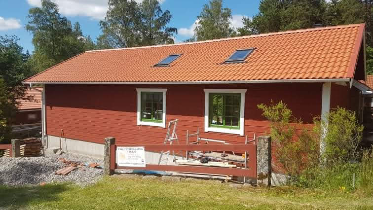
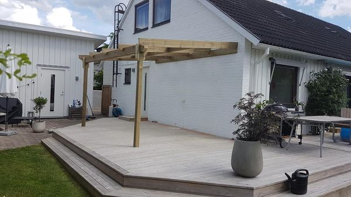
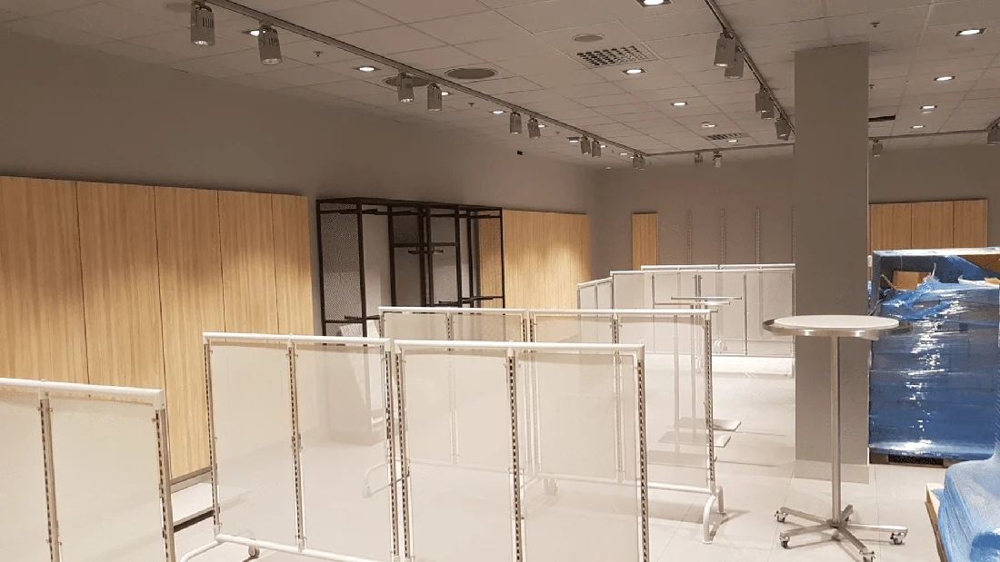
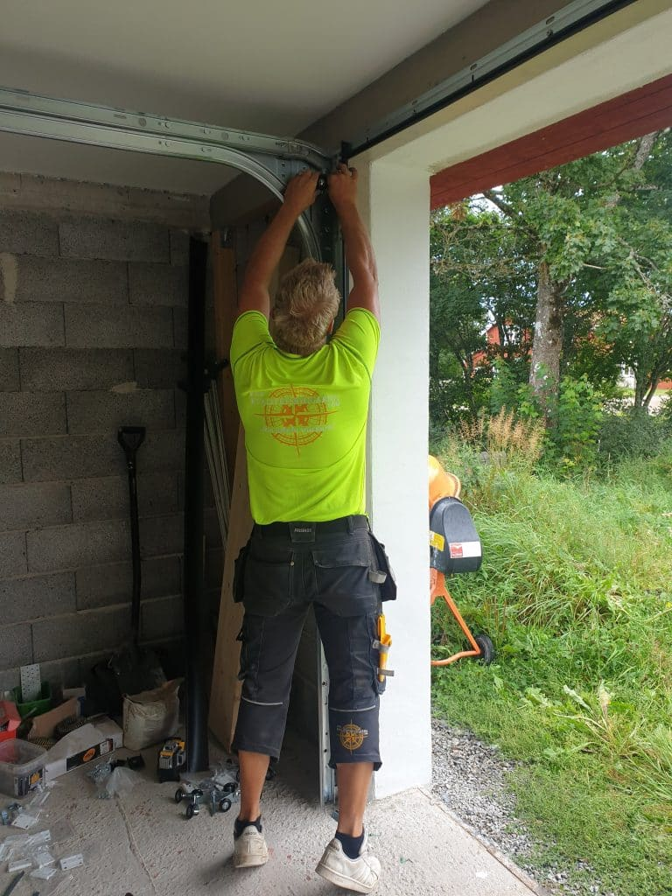
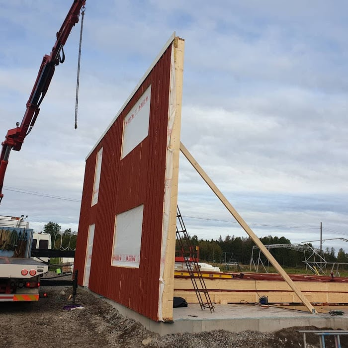

BYGG & SNICKERI
Bygg nytt. Bygg vidare.
Lösvirkeshus, väggblock, garage och stall. Vi hjälper dig att planera och bygga utifrån platsen och dina behov.
BYGG, SNICKERI & MONTAGE I VÄXJÖ
Från den första idén till sista listen. Vi bygger, renoverar och skapar plats för livet.
LITET SOM STORT. ALLTID MED OMSORG.
En altan för långa sommarkvällar. Ett kök som fungerar i vardagen. Eller ett helt nytt hus. Vi på Kvalitetsbyggarna hjälper dig att ta nästa steg med ditt byggprojekt.
VÅRA TJÄNSTER
Vi hjälper privatpersoner och företag med bygg, snickeri, montage och svets. Här börjar vägen till ditt nästa projekt.

Lösvirkeshus, väggblock, garage och stall. Vi hjälper dig att planera och bygga utifrån platsen och dina behov.

Förnya det du har, bygg till ett rum eller flytta ut livet på en altan. Vi arbetar med omsorg om helheten.

Från kök och butiksinredning till fasadskivor och väggblock. Vi hjälper till med såväl små som tunga montage.
Ett urval bilder från våra arbeten. Från trä och stomme till färdiga rum och platser att trivas på.
Visar alla arbeten
Ett bra projekt börjar med att vi förstår vad du vill göra. Här är frågorna vi tar oss igenom tillsammans.
Berätta vad du vill förändra, var projektet finns och hur du tänker kring tid och budget. Bilder och skisser är en bra start.
Vi stämmer av mått, befintliga förutsättningar och vad som behöver lösas. Vid behov tar vi hjälp av vårt nätverk.
Omfattning, materialval och upplägg behöver vara tydliga innan arbetet börjar. Tillsammans går vi igenom nästa steg.
Vi utför det överenskomna arbetet med omsorg om detaljerna och går igenom resultatet tillsammans med dig.
Har du ingen färdig ritning? Det går bra att börja med en idé. Beskriv vad du vill uppnå, så tar vi diskussionen därifrån.
Beskriv din idé

KVALITETSBYGGARNA I VÄXJÖ
Vi är ett lokalt byggföretag i Växjö med ett stort nationellt nätverk. Hos oss möts bygg och snickeri med kunnande inom montage, infästning och svets.
Vi hjälper både privatpersoner och företag, med allt från mindre förbättringar till nybyggnation. När projektet behöver fler kompetenser finns våra kunniga och noggranna samarbetspartners nära till hands.
Några saker att fundera på innan du sätter igång. Du behöver inte ha alla svar när du kontaktar oss.
Vad ska fungera bättre? Mer förvaring, en större matplats eller en uteplats med kvällssol? Beskriv användningen före detaljerna.
Samla bilder på material och lösningar du gillar. Tänk också på skötsel, slitage och hur det nya ska passa det befintliga.
Lista vad som är viktigast och vad som kan vänta. Ungefärliga mått och en önskad start gör det lättare att prata om upplägget.
Vi arbetar med bygg och snickeri, nybyggnation, om- och tillbyggnad, renovering, kök, badrum, garage och stall. Vi erbjuder också montage, infästning samt svets och smide. Kontakta oss för att prata om vad just ditt projekt behöver.
Ja. Vi hjälper till i både stort och smått, för såväl privatpersoner som företag. Det kan handla om ett avgränsat montage, en förbättring i hemmet eller en större byggnation.
En kort beskrivning av vad du vill göra och var projektet finns räcker för att börja. Lägg gärna till ungefärliga mått, foton, skisser och tankar om när du vill komma igång. En färdig ritning är inte nödvändig för ett första samtal.
Omfattningen, materialvalen, platsens förutsättningar och behovet av andra yrkesgrupper påverkar priset. Därför behöver vi först förstå ditt projekt och vad som ska ingå. Beskriv gärna din budgetram när du kontaktar oss.
Ja. Vi hjälper bland annat till med konsoler, stålbalkar, smidesstaket och stallinredning. Vi har erfarenhet av tunga infästningar och kan även hjälpa till med hållfasthetsberäkning. Vår svetsansvarige har IWS-behörighet. Krav på exempelvis EN 1090 eller svetsarprövning stäms av för det aktuella uppdraget.
Ja, se urvalet här på sidan och besök oss på Instagram eller Facebook för fler bilder och inspiration.
Berätta om det finns ritningar, konstruktionsunderlag eller tidigare dokumentation. Kontrollera också med kommunen vilka handlingar som behövs för det du planerar. Ta med underlagen i dialogen, så kan vi prata om vad som behöver utredas vidare.
DITT NÄSTA PROJEKT BÖRJAR HÄR
Stora planer eller en första fundering. Berätta vad du har i tankarna, så pratar vi om möjligheterna.

Måndag till fredag, kl. 07.00-17.00
Kvalitetsbyggarna i Växjö AB
DITT MEJLUTKAST ÄR KLART
Öppna utkastet i ditt e-postprogram och lägg gärna till bilder eller ritningar innan du skickar.
Vi är intresserade av erfarna snickare som är noggranna, självgående och trivs med varierande uppdrag.